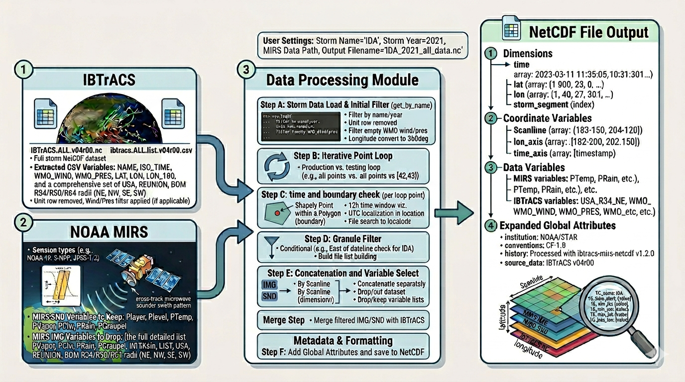
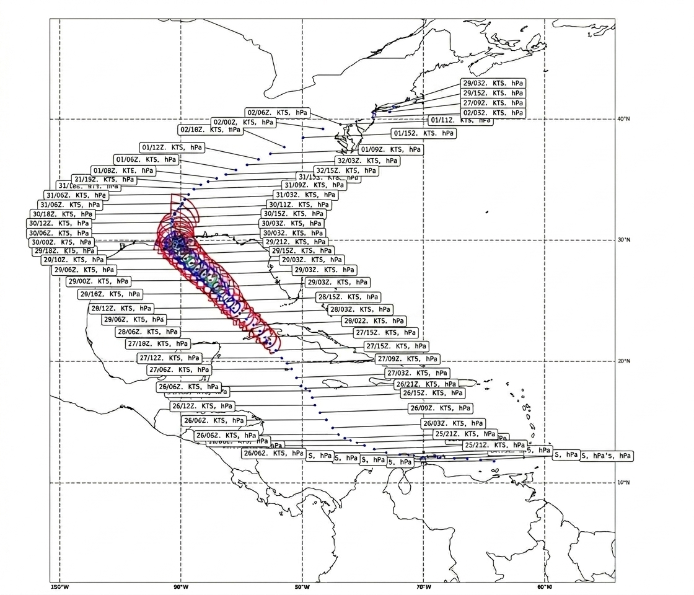
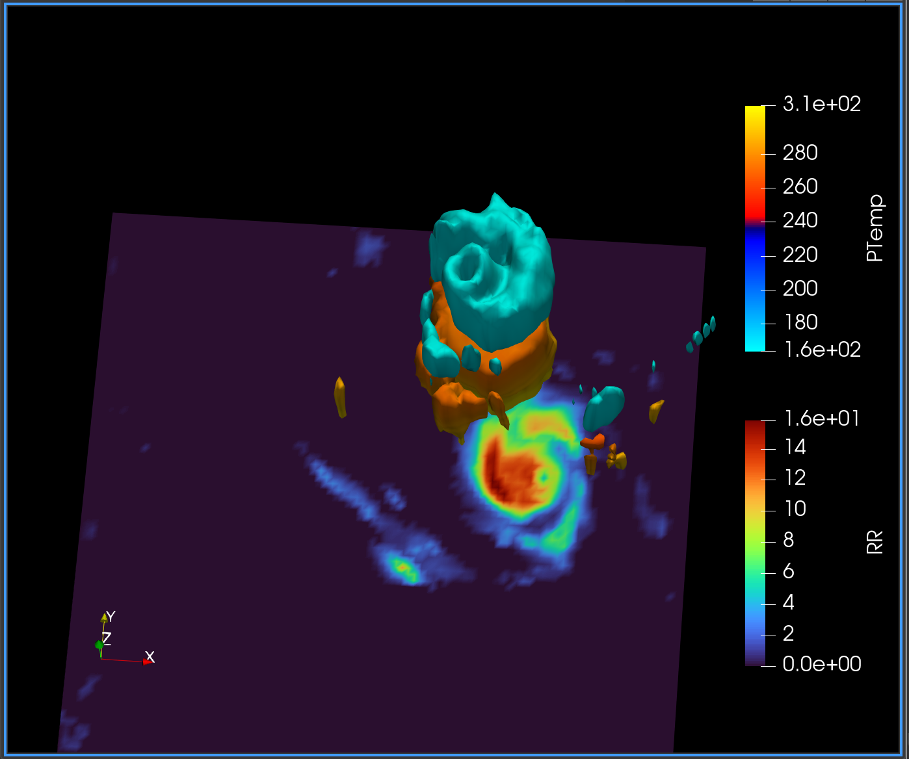

Probabilistic models,
uncertainty & learning
I am a Statistics & Mathematics graduate interested in probabilistic and generative modeling for uncertainty-aware learning in high-dimensional regimes, with a focus on scalable optimization and the development of reliable world models for physically grounded AI systems.
Experience
Undergraduate Research Assistant
Built a deep neural network to characterize and correct satellite sea surface temperature retrieval residuals from microwave sensor data, reducing standard deviation error by over 40%. Developed a visualization tool for storm lifecycle analysis and automated large satellite dataset processing pipelines.
Statistical Programmer
Developed and debugged programs to generate compliant datasets from clinical databases. Created macros for data cleaning, reporting, and generating analysis datasets, tables, and figures for clinical studies.
Undergraduate Research Assistant
Automated extraction, remapping, and preprocessing of remote sensing satellite data using MATLAB and Bash to support large-scale environmental data analysis.
Teaching
Course Assistant — Statistical Computing
Evaluate student assignments and projects in Python, R, and SAS; provide feedback on code quality, statistical reasoning, and reproducibility.
Teaching Assistant — Computational Methods
Supported nine sections over three years. Provided solutions and feedback on MATLAB assignments covering numerical methods, linear systems, and approximation theory.
Academic Tutor — Statistics & Computer Science
Supported undergraduate students across probability, statistical modeling, data analysis, and programming fundamentals, with an emphasis on sound reasoning and reproducible code.
Research
Safe Autonomous Driving in Mixed-Traffic Environments
Used a VR simulator to collect human driving data across diverse pre-crash scenarios. Designed environments replicating adverse conditions; analyzed correlations between driving behavior and safety-critical actions. Presented to a large technical audience at a university hackathon (competitively selected).
Neural Network Correction of Satellite SST Retrievals
Developed a deep neural network to characterize and correct sea surface temperature retrieval residuals from microwave satellite data, reducing error by over 40%. Also built storm lifecycle visualization tools from historical track databases.
Microgravity Experiment Design
Contributed to a spaceflight research proposal on microgravity phenomena as part of a nationally affiliated university spaceflight program. The proposal was selected as a program finalist.
Software — click a card to flip

tcmirs
Automates construction of analysis-ready datasets by merging hurricane track data with satellite retrievals. Enables downstream modeling of spatiotemporal physical systems by aligning heterogeneous, high-dimensional observations into a unified representation for statistical and machine learning workflows.

tc-viz
Visualization tool for tropical cyclone lifecycles using IBTrACS data. Generates maps of storm track and wind radii across four quadrants, alongside wind intensity and pressure timeseries. Used by NOAA scientists for storm severity analysis and reporting.

mirs-hydro-3d
Constructs 3D volumetric representations of hydrometeor fields within tropical cyclones from satellite data. Enables exploration of complex physical structures and supports future development of data-driven world models for atmospheric systems.
Blog